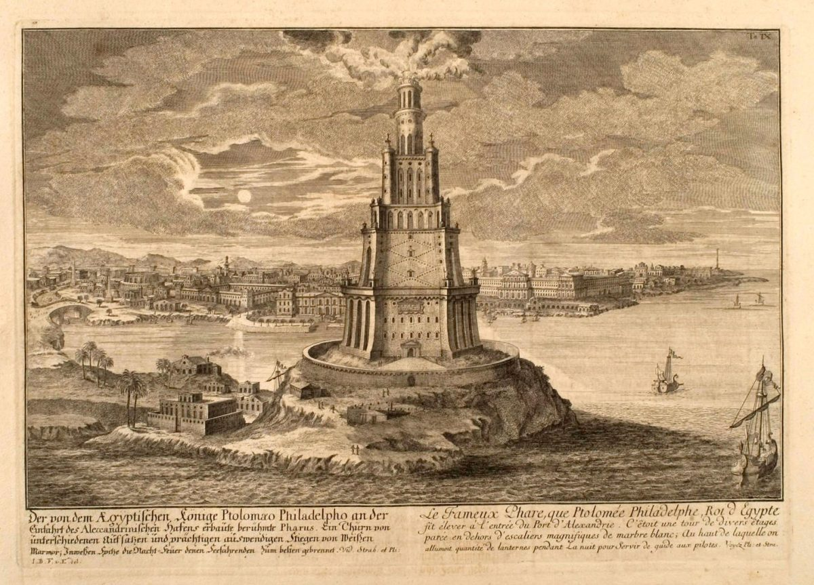
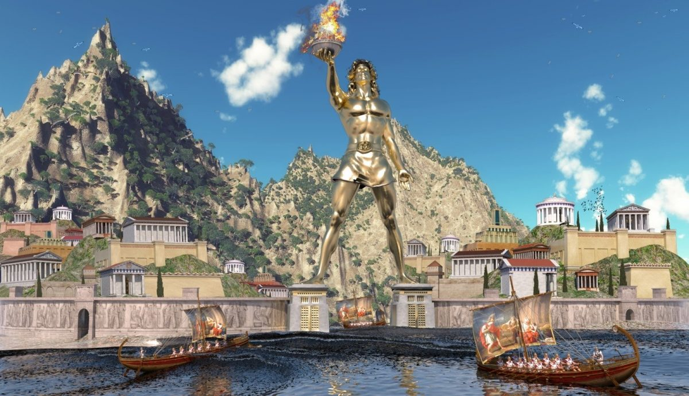
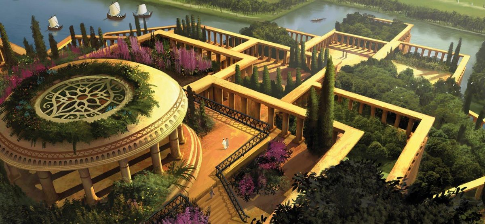
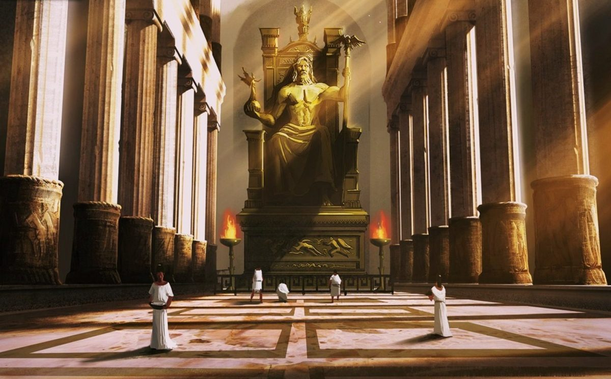
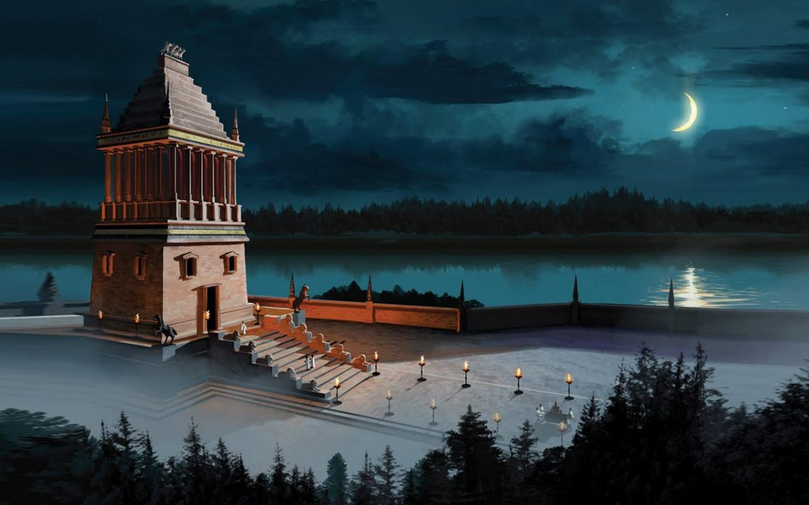
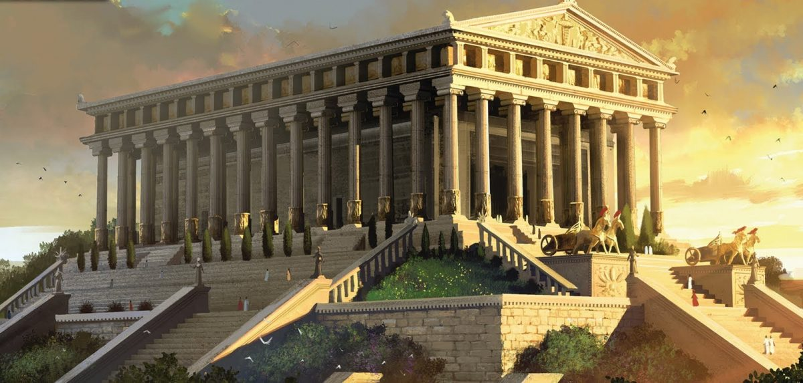

Las 7 maravillas del mundo moderno
Faro de Alejandria
Se creo con el objetivo de guiar a los navios hasta el puerto de pharos. La leyenda cuenta que desde su construccion, el resto de edificaciones de igual finalidad adquirieron el nombre de faro.
El coloso de Rodas
Fue forjado entre el año 294 y 282 a.c para reverenciar al dios griego del sol: Helios. La obra alacanzaba los 32 metros de altura y muchos expertos afirman que acuaba como puerta de entrada al puerto de la ciudad.
Los jardines de Babilonia
Es la maravilla que mas dudas plantea sobre su autentica existencia, sobre todo ante la ausencia de restos que lo corroboren. Los historiadores aseguran que se tratana de una hermosa ciudad. su jardin disponia de unas terrazas con gran vejetacion y se encontraba a orillas del rio Eufrates.
La estatua de Zeus
Esta increible estructura se encontraba en olimpia, la actual grecia. Fue esculpida en marfil, bañada en oro y decorada con multitud de piedras preciosas. Tenia doce metros de altura y su autor fue el escultor griego de todo los tiempos: Fidias
Piramides de Giza

Es la unica de las siete maravillas del mundo antiguo que todavia permanece en pie. En realidad , Estamos aste un conjunto de tres piramides independiente: Keops, Kefren y Micerino. Se cree que fue construida en el año 2.570 a.c. como recinto funerario del faraon keops.
El Mausoleo de Halicarnaso
Esta monumental estructura fue concebida como una tumba realizada en marmol blanco y con mas de 50 metros de altura. Artemisa lo mando a construir en honor a su marido Mausolo. De ahi la acual denominacion.
Templo de Artemisa
Fue edificado en el año 550 a.c. Bajo las ordenes del rey creso. Tras un incendio intencionado, el templo fue reconstruido por Alejandro Magno. Es considerada por muchos como la obra mas impresionante de toda la lista.